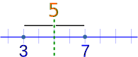
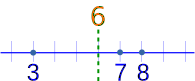

Finding a Central Value
When you have two or more numbers it is nice to find a value for the "center".
2 Numbers
With just 2 numbers the answer is easy: go half-way between.
Example: what is the central value for 3 and 7?
Answer: Half-way between, which is 5.

We can calculate it by adding 3 and 7 and then dividing the result by 2:
3 or More Numbers
We can use that idea of "adding then dividing" when we have 3 or more numbers:
Example: what is the central value of 3, 7 and 8?
Answer: We calculate it by adding 3, 7 and 8 and then dividing the results by 3 (because there are 3 numbers):

Notice that we divide by 3 because we have 3 numbers ... very important!
The Mean
So far we have been calculating the Mean (or the Average):
Mean: Add up the numbers and divide by how many numbers.
But sometimes the Mean can let you down:
Example: Birthday Activities
Uncle Bob wants to know the average age at the party, to choose an activity.
There will be 6 kids aged 13, and also 5 babies aged 1.
Add up all the ages, and divide by 11 (because there are 11 numbers):
The mean age is about 7½, so he gets a Jumping Castle! The 13 year olds are embarrassed, |
The Mean was accurate, but in this case it was not useful.
The Median
But you could also use the Median: simply list all numbers in order and choose the middle one:
Example: Birthday Activities (continued)
List the ages in order:
1, 1, 1, 1, 1, 13, 13, 13, 13, 13, 13
Choose the middle number:
1, 1, 1, 1, 1, 13, 13, 13, 13, 13, 13
The Median age is 13 ... so let's have a Disco!
Sometimes there are two middle numbers. Just average those two:
Example: What is the Median of 3, 4, 7, 9, 12, 15
There are two numbers in the middle:
3, 4, 7, 9, 12, 15
So we average them:
The Median is 8
The Mode
The Mode is the value that occurs most often:
Example: Birthday Activities (continued)
Group the numbers so we can count them:
1, 1, 1, 1, 1, 13, 13, 13, 13, 13, 13
"13" occurs 6 times, "1" occurs only 5 times, so the mode is 13.
How to remember? Think "mode is most"
But Mode can be tricky, there can sometimes be more than one Mode.
Example: What is the Mode of 3, 4, 4, 5, 6, 6, 7
Well ... 4 occurs twice but 6 also occurs twice.
So both 4 and 6 are modes.
When there are two modes it is called "bimodal", when there are three or more modes we call it "multimodal".

Outliers
Outliers are values that "lie outside" the other values.
They can change the mean a lot, so we can either not use them (and say so) or use the median or mode instead.
Example: 3, 4, 4, 5 and 104
Mean: Add them up, and divide by 5 (as there are 5 numbers):
24 does not represent those numbers well at all!
Without the 104 the mean is:
But please tell people you are not including the outlier.
Median: They are in order, so just choose the middle number, which is 4:
3, 4, 4, 5, 104
Mode: 4 occurs most often, so the Mode is 4
3, 4, 4, 5, 104
Other Means
The mean (average) we have been looking at is more correctly called the Arithmetic Mean.
There are other types of mean! Here are two examples:
The Geometric Mean multiplies the numbers together, then does a square root or cube root etc depending on how many numbers, like in this example:
Example: The Geometric Mean of 2 and 18
- First we multiply them: 2 × 18 = 36
- Then (as there are two numbers) take the square root: √36 = 6
Learn more at Geometric Mean.
The Harmonic Mean adds up "1 divided by number" then flips it like this:
Example: The Harmonic Mean of 2, 4, 5 and 100
With 4 numbers we get:
| 4 | = | 4 | = 4.17 (to 2 places) |
| 12 + 14 + 15 + 1100 | 0.96 |
Learn more at Harmonic Mean.
Conclusion
Mean, Median and Mode are the most common ways of measuring central value, but there are other ways.
Use the one that best suits your data. Or better still, use all three!